关于世锦赛山口斜月白6
#1 关于世锦赛山口斜月白6 作者：有志青年 发表时间：2007-8-29 16:57:11
最近有棋友问世锦赛上山口的斜月白6黑能否胜？这个问题数年前与许斌、蔡力捷讨论过一次，那时初步的结论是黑胜。因为国内比赛此变例少见，所以未作进一步的深究。此次山口两盘使用这个白6效果不错，主要是对手对这步非主流的应手没准备，实战临场计算要找到正解谈何容易。下面略作解答，错漏之处望大家指正。
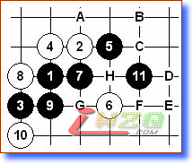
图一：黑7时白8最强防，其他的8太弱黑棋容易胜。黑9～11做棋基本型，白棋大致有A～G的防点，以下分述。
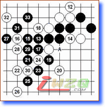
图二：12－A
12弱防，14意图分隔黑棋联络。15、17简明必胜形，19～23基本定式常用的胜法。14逆止黑15－A！
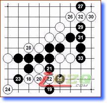
图三：18变换防守也不行，黑棋类似的胜法在本型中常用。
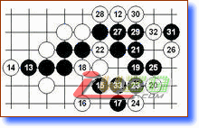
图四：12－B
14如逆止，黑棋的胜法参考12－A的变化。15局部要点，16最强抵抗，以下黑简单追胜。
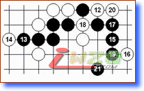
图五：12－C
14如逆止，黑棋的胜法参考12－A的变化。黑21妙手白无解。
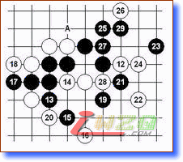
图六：12－D
13显而易见的要点，14最强防。15、17好次序，以下黑胜不难。
如：14－17，15－A，16－21，17－14！
如：14－20，15－15，16－16，17－14！
如：14－15，15－14！
图七：12－E
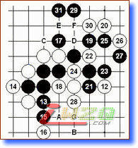
黑13此型常见要点，14只能如此。15、17必要的次序，18意图分断黑棋上下联系，但黑棋仍可有借用之处。
如：18－24，19－A，20－B，21－C，22－D，23－E！
如：18－22，19－F！
如：18－23，19－A，20－B，21－G后简单追胜。
图八：12－F
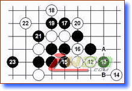
本图12虽然弱，但13、15次序关键。如：14－17，15反先后，A、B简单追胜。
图九：12－G
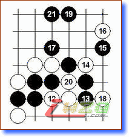
本图15好棋，16最强防。19、21简明易胜。
图十：12－H
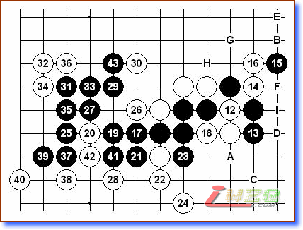
12最强防，13、15常用手段。18只能如此，如18逆止，黑19－A简单胜。左边的棋形本型多次出现，22、24看似高效，但25绝妙！白无解。
如：16－B，17－17，18－19，19－C！
如：16－D，17－17，18－18，19－23，20－24，21－B，23－E，24－F，25－G！
如：16－H，17－17，18－18，19－23，20－24，21－i
图十一：14的变化
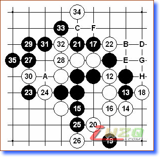
15依旧要点！16意图牵制黑棋。黑17以下次序井然有序。如18逆止，19－20后追胜。
如：16－A或19，17－16！
如：16－20，17－17，18－C（18逆止黑上方简单胜），19－B，21－22，22－D，23－F，24－H，25－G！
#2 Re:关于世锦赛山口斜月白6 作者：【弈缘】狂人 发表时间：2007-8-29 18:07:19
学习了~~~~~~~~~~~谢谢啊